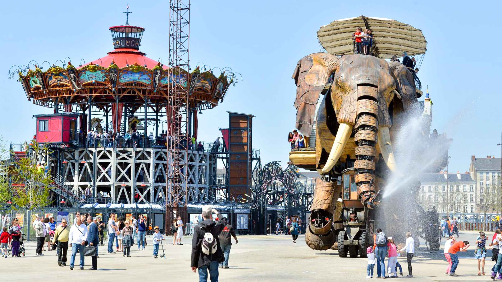
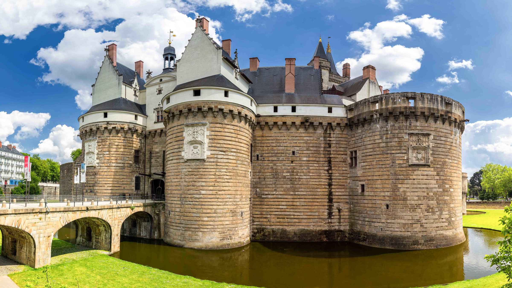

If you only had a weekend in Nantes, these are the three places I'd point you toward — a shipyard turned mechanical zoo, a medieval castle, and a river village that still feels a world away from the city.

Les Machines de l'île
Built on Nantes' former shipyards, this is part art installation, part fairground: a 12-metre mechanical elephant that walks visitors around the island, a three-level marine carousel, and a gallery of mechanical creatures inspired by Jules Verne. It's the one attraction almost every visitor to Nantes ends up at.
Île de Nantes — tram line 1, Chantiers Navals stop

Château des Ducs de Bretagne
The old seat of the Dukes of Brittany, right in the city centre. You can walk the ramparts for free, and the moat and towers make it one of the best-preserved medieval castles in France. Inside, the Nantes History Museum walks through the city's past, from its maritime trade to its industrial growth.
Free rampart walk; museum ticketed

Trentemoult
A former fishing village just across the Loire from the city centre, reachable by a short boat ride (the Navibus). Its narrow streets and brightly painted houses feel more like a Breton fishing port than part of a metropolitan area of nearly 700,000 people.
Reached by Navibus from Gare Maritime